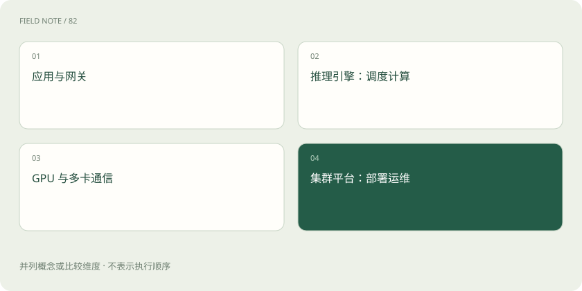

先读哪些知识
先用一个类比理解
推理引擎像厨房内部的排单系统；Kubernetes 像管理多家厨房开关门和资源的运营平台。运营平台不能自动改好每一道菜的制作算法。
类比只帮助建立直觉，不等同于技术的完整机制。
一图看懂

批处理提升资源利用
批处理把多个请求的计算组织到一起。持续批处理允许在生成过程中调整活跃请求集合，比等一整批全部结束更灵活。但为了吞吐等待凑批，也可能增加用户延迟。
并行方式解决不同问题
数据并行常让多个副本处理不同请求；张量并行把某些运算分到多设备；流水线并行划分模型层；专家并行分布 MoE 专家。它们可以组合，但通信开销与硬件拓扑十分关键。
不要把基础设施当模型能力
vLLM 是推理与服务工具之一，Kubernetes 管容器化工作负载。二者都不会把错误资料变成正确答案。生产运行还要考虑健康检查、扩缩容、模型加载时间和故障恢复。
放进真实场景
SCENARIO
突然增加十倍请求，新增副本可能需要下载和加载权重。自动扩容不是瞬间生效，容量规划应考虑冷启动和排队。
别踩这个误区
更大的 batch 或更多 GPU 不保证单个用户更快；先明确追求吞吐还是交互体验。
想一想
Kubernetes 会直接替模型完成 Token 生成吗？
不会。模型计算由推理引擎及底层运行时完成。
关联阅读
资料与边界
本文为原创知识讲解。类比和图示经过简化；示例数字不代表实测或报价。整理日期：2026-11-04。文末列出对应技术的原始资料，具体功能与版本支持请以原文为准。
按完整目录逐篇阅读